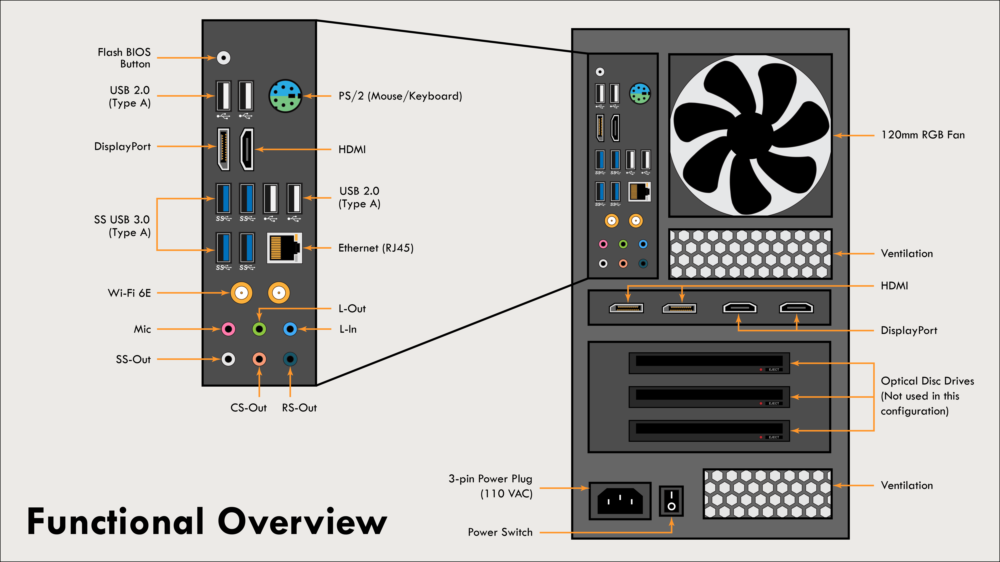
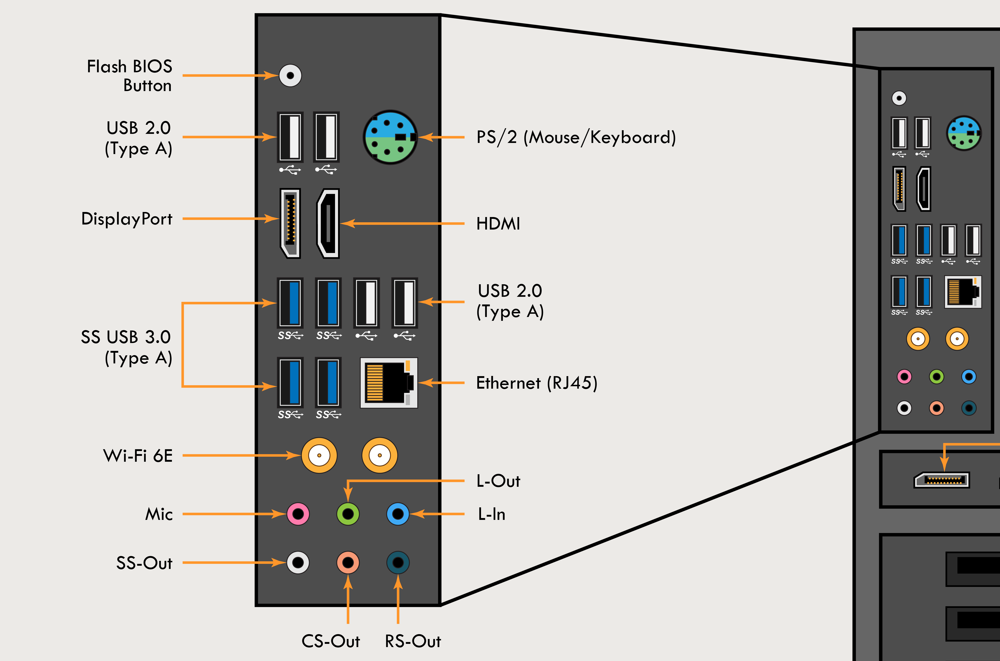

Functional Diagram of PC Rear Panel
I created this diagram to demonstrate my experience designing clear visual documents with Adobe Illustrator.
Context
In my role as a Technical Writer, I've developed my skills with various software in addition to writing and editing.
One area in particular that I've developed is my familiarity with Adobe products, including Adobe Illustrator.
Because the documents that I create for work contain confidential information, I chose to design a diagram in Adobe Illustrator in my free time to demonstrate my experience with the software.
I created a graphic that provides a functional overview of the ports at the rear of my PC, to mimic the types of graphics I've created for work.
Process
I began by taking reference photos of the panel on my PC that I would be diagramming.
While many of the ports were labelled, I had to conduct research on some of the ports to understand their purpose and technical names.
I then sketched out a rough draft of the diagram on paper to plan out how to organize the information I wanted to include in the image.
As I built the diagram in Adobe Illustrator, I combined my past experience using the program with the design principles I learned in my Technical Communication courses at the University of Minnesota.
I made sure that elements in the diagram were aligned properly, and that I used consistent formatting to create a visually appealing end product.
Impact
Image Gallery

The finished diagram of the PC rear panel, with ports labelled by function.

Close-up on details in the diagram. Each port was created by hand in Illustrator.